The whole corpus, rendered live
All 21 governing-corpus images side by side: the original, the scripted
pixel runtime evaluating the splat formula in your browser, the scriptless
CSS build as real DOM composited from a stylesheet, and the
corrected-exporter SVG as a true vector — every one of them the deployed
artifact itself, drawn live by your browser, because GitHub Pages applies no
sanitizer. PowerPoint is the one target that cannot render live: its column
is a real Microsoft PowerPoint slideshow capture, with the editable deck one
click away.
Rows are ordered best-to-worst by deployed SVG LPIPS. Every
score is a seed-0 measurement of these exact artifact families against the
source in the governing renderer — Chromium for the browser targets, real
PowerPoint for the decks — quoted from the versioned ledgers. The page is
generated by tools/build_corpus_gallery.py and goes stale
loudly in CI.
colorwheel · graphic · 371×370
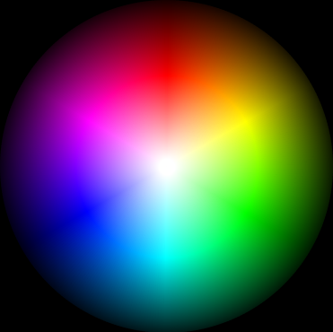
Source · original bitmap · 76 KB
Scripted runtime · LPIPS 0.0117 · SSIM 0.9752 · 1,389 splats · 226 KB · live JS/WebGL
Scriptless CSS · LPIPS 0.0122 · SSIM 0.9554 · 1,706 splats · 890 KB · live DOM
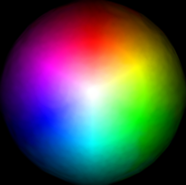
SVG · LPIPS 0.0155 · SSIM 0.9463 · 1,706 splats · 946 KB · live vector
PowerPoint · LPIPS 0.2138 · SSIM 0.8207 · 1,354 shapes · 127 KB · real capture · deck
logo · transparency · 384×384
Source · original bitmap · 115 KB
Scripted runtime · LPIPS 0.0971 · SSIM 0.9203 · 1,454 splats · 229 KB · live JS/WebGL
Scriptless CSS · LPIPS 0.0823 · SSIM 0.8969 · 1,445 splats · 753 KB · live DOM
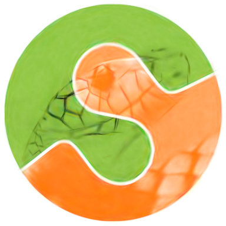
SVG · LPIPS 0.0863 · SSIM 0.8885 · 1,445 splats · 813 KB · live vector
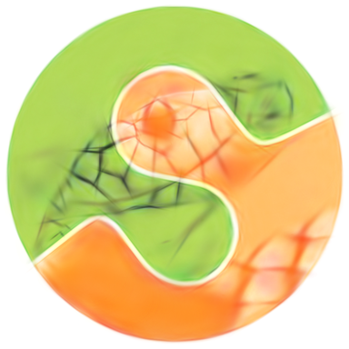
PowerPoint · LPIPS 0.1442 · SSIM 0.8784 · 1,452 shapes · 123 KB · real capture · deck
text · text-like · 384×147
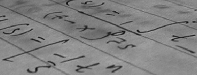
Source · original bitmap · 49 KB
Scripted runtime · LPIPS 0.1437 · SSIM 0.8903 · 954 splats · 167 KB · live JS/WebGL
Scriptless CSS · LPIPS 0.1337 · SSIM 0.8201 · 962 splats · 501 KB · live DOM
SVG · LPIPS 0.1287 · SSIM 0.8214 · 962 splats · 522 KB · live vector
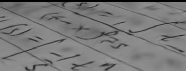
PowerPoint · LPIPS 0.2653 · SSIM 0.2893 · 942 shapes · 87 KB · real capture · deck
brick · texture · 384×384
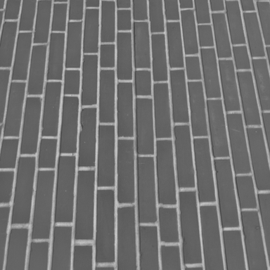
Source · original bitmap · 89 KB
Scripted runtime · LPIPS 0.0472 · SSIM 0.9722 · 1,449 splats · 269 KB · live JS/WebGL
Scriptless CSS · LPIPS 0.1388 · SSIM 0.8445 · 1,458 splats · 759 KB · live DOM
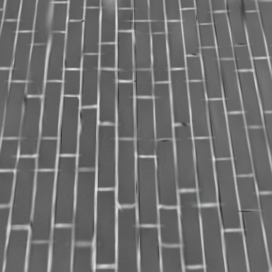
SVG · LPIPS 0.1470 · SSIM 0.8278 · 1,458 splats · 789 KB · live vector
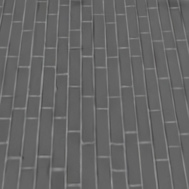
PowerPoint · LPIPS 0.1315 · SSIM 0.7829 · 1,456 shapes · 144 KB · real capture · deck
chameleon · reference · 364×384
Source · original bitmap · 166 KB
Scripted runtime · LPIPS 0.1284 · SSIM 0.9140 · 1,682 splats · 290 KB · live JS/WebGL
Scriptless CSS · LPIPS 0.1456 · SSIM 0.8748 · 1,615 splats · 842 KB · live DOM
SVG · LPIPS 0.1672 · SSIM 0.8494 · 1,615 splats · 885 KB · live vector
PowerPoint · LPIPS 0.2075 · SSIM 0.8395 · 1,674 shapes · 161 KB · real capture · deck
checkerboard · hard-edges · 200×200
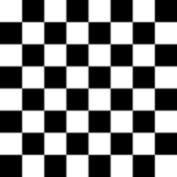
Source · original bitmap · 1 KB
Scripted runtime · LPIPS 0.2349 · SSIM 0.5753 · 1,395 splats · 194 KB · live JS/WebGL
Scriptless CSS · LPIPS 0.1614 · SSIM 0.6120 · 1,345 splats · 700 KB · live DOM
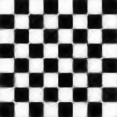
SVG · LPIPS 0.1733 · SSIM 0.6064 · 1,345 splats · 815 KB · live vector
PowerPoint · LPIPS 0.3269 · SSIM 0.3955 · 1,391 shapes · 81 KB · real capture · deck
rocket · landscape · 384×256
Source · original bitmap · 120 KB
Scripted runtime · LPIPS 0.1878 · SSIM 0.8873 · 1,356 splats · 246 KB · live JS/WebGL
Scriptless CSS · LPIPS 0.1856 · SSIM 0.8335 · 1,325 splats · 690 KB · live DOM
SVG · LPIPS 0.2136 · SSIM 0.7960 · 1,325 splats · 691 KB · live vector
PowerPoint · LPIPS 0.2720 · SSIM 0.7730 · 1,348 shapes · 135 KB · real capture · deck
coffee · natural · 384×256
Source · original bitmap · 180 KB
Scripted runtime · LPIPS 0.2227 · SSIM 0.7751 · 1,429 splats · 241 KB · live JS/WebGL
Scriptless CSS · LPIPS 0.2386 · SSIM 0.7077 · 1,389 splats · 724 KB · live DOM
SVG · LPIPS 0.2349 · SSIM 0.6963 · 1,389 splats · 765 KB · live vector
PowerPoint · LPIPS 0.2704 · SSIM 0.6278 · 1,449 shapes · 134 KB · real capture · deck
moon · smooth-gradient · 384×384
Source · original bitmap · 78 KB
Scripted runtime · LPIPS 0.2653 · SSIM 0.9338 · 1,276 splats · 237 KB · live JS/WebGL
Scriptless CSS · LPIPS 0.2114 · SSIM 0.9166 · 1,239 splats · 645 KB · live DOM
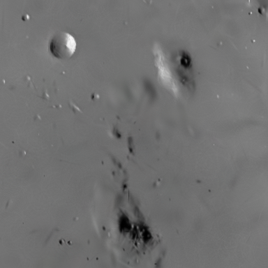
SVG · LPIPS 0.2404 · SSIM 0.8831 · 1,239 splats · 638 KB · live vector
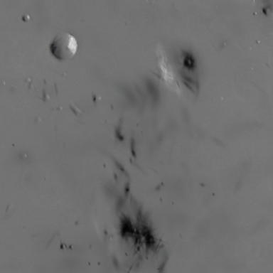
PowerPoint · LPIPS 0.2567 · SSIM 0.9038 · 1,276 shapes · 128 KB · real capture · deck
astronaut · portrait · 384×384
Source · original bitmap · 235 KB
Scripted runtime · LPIPS 0.2534 · SSIM 0.7160 · 1,619 splats · 260 KB · live JS/WebGL
Scriptless CSS · LPIPS 0.2351 · SSIM 0.7016 · 1,595 splats · 831 KB · live DOM
SVG · LPIPS 0.2422 · SSIM 0.6896 · 1,595 splats · 915 KB · live vector
PowerPoint · LPIPS 0.3212 · SSIM 0.5725 · 1,621 shapes · 134 KB · real capture · deck
coins · grayscale · 384×303
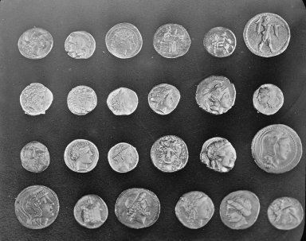
Source · original bitmap · 121 KB
Scripted runtime · LPIPS 0.2517 · SSIM 0.7409 · 1,157 splats · 196 KB · live JS/WebGL
Scriptless CSS · LPIPS 0.2429 · SSIM 0.7059 · 1,182 splats · 616 KB · live DOM
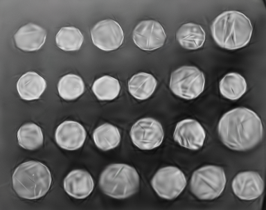
SVG · LPIPS 0.2433 · SSIM 0.6935 · 1,182 splats · 677 KB · live vector
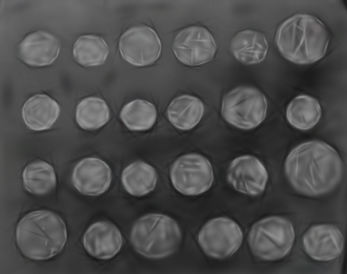
PowerPoint · LPIPS 0.2876 · SSIM 0.6279 · 1,171 shapes · 101 KB · real capture · deck
chelsea · fur · 384×255
Source · original bitmap · 161 KB
Scripted runtime · LPIPS 0.2443 · SSIM 0.8589 · 1,674 splats · 293 KB · live JS/WebGL
Scriptless CSS · LPIPS 0.2520 · SSIM 0.8052 · 1,616 splats · 842 KB · live DOM
SVG · LPIPS 0.2459 · SSIM 0.7805 · 1,616 splats · 871 KB · live vector
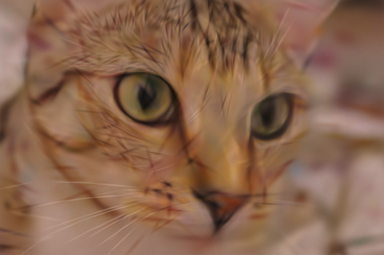
PowerPoint · LPIPS 0.3161 · SSIM 0.7461 · 1,686 shapes · 162 KB · real capture · deck
cell · grayscale · 320×384
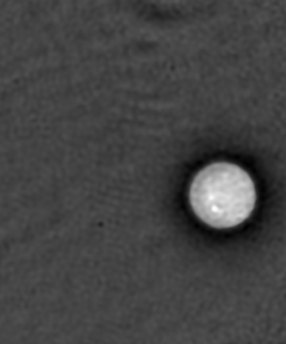
Source · original bitmap · 44 KB
Scripted runtime · LPIPS 0.2361 · SSIM 0.9545 · 1,457 splats · 278 KB · live JS/WebGL
Scriptless CSS · LPIPS 0.2568 · SSIM 0.9389 · 1,389 splats · 724 KB · live DOM
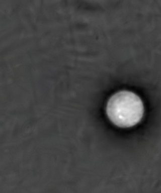
SVG · LPIPS 0.2990 · SSIM 0.8852 · 1,389 splats · 697 KB · live vector
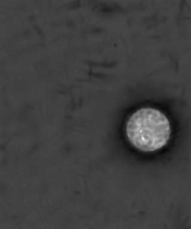
PowerPoint · LPIPS 0.3338 · SSIM 0.9133 · 1,374 shapes · 144 KB · real capture · deck
stereo_motorcycle · natural · 384×259
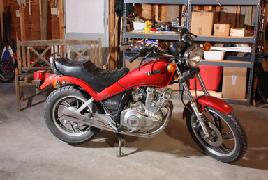
Source · original bitmap · 187 KB
Scripted runtime · LPIPS 0.3049 · SSIM 0.7202 · 1,419 splats · 229 KB · live JS/WebGL
Scriptless CSS · LPIPS 0.3149 · SSIM 0.6735 · 1,338 splats · 697 KB · live DOM
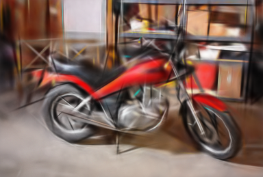
SVG · LPIPS 0.3090 · SSIM 0.6644 · 1,338 splats · 756 KB · live vector
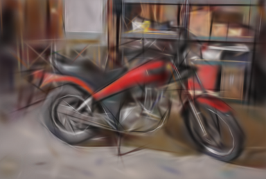
PowerPoint · LPIPS 0.3698 · SSIM 0.5845 · 1,434 shapes · 122 KB · real capture · deck
camera · grayscale · 384×384
Source · original bitmap · 121 KB
Scripted runtime · LPIPS 0.3673 · SSIM 0.7627 · 1,192 splats · 200 KB · live JS/WebGL
Scriptless CSS · LPIPS 0.3143 · SSIM 0.7517 · 1,184 splats · 617 KB · live DOM
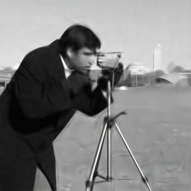
SVG · LPIPS 0.3278 · SSIM 0.7404 · 1,184 splats · 670 KB · live vector
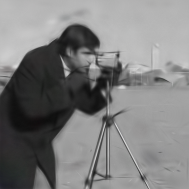
PowerPoint · LPIPS 0.3935 · SSIM 0.6860 · 1,224 shapes · 106 KB · real capture · deck
retina · smooth-gradient · 384×384
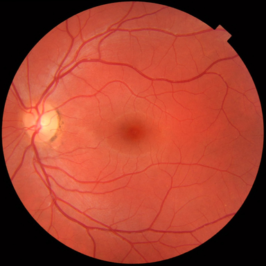
Source · original bitmap · 165 KB
Scripted runtime · LPIPS 0.2357 · SSIM 0.8598 · 1,516 splats · 257 KB · live JS/WebGL
Scriptless CSS · LPIPS 0.3651 · SSIM 0.8051 · 1,533 splats · 799 KB · live DOM
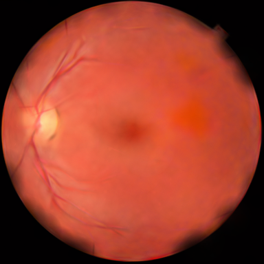
SVG · LPIPS 0.3704 · SSIM 0.7881 · 1,533 splats · 849 KB · live vector
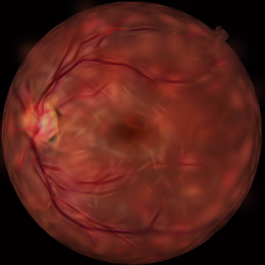
PowerPoint · LPIPS 0.3756 · SSIM 0.6593 · 1,523 shapes · 134 KB · real capture · deck
immunohistochemistry · texture · 384×384
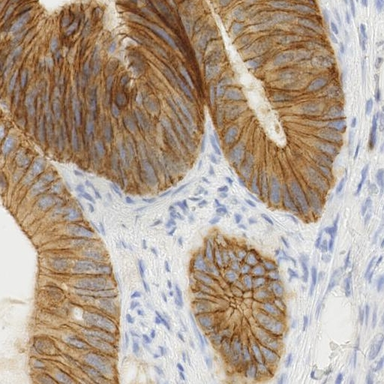
Source · original bitmap · 284 KB
Scripted runtime · LPIPS 0.4411 · SSIM 0.6467 · 1,651 splats · 276 KB · live JS/WebGL
Scriptless CSS · LPIPS 0.4226 · SSIM 0.6329 · 1,714 splats · 893 KB · live DOM
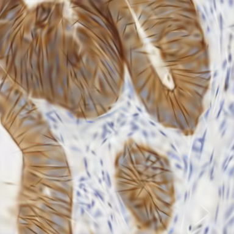
SVG · LPIPS 0.4078 · SSIM 0.6192 · 1,714 splats · 947 KB · live vector
PowerPoint · LPIPS 0.4956 · SSIM 0.5865 · 1,652 shapes · 152 KB · real capture · deck
hubble_deep_field · dark-sparse · 384×335
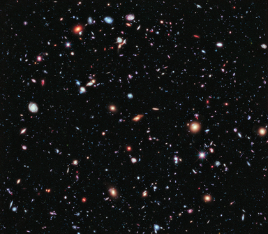
Source · original bitmap · 226 KB
Scripted runtime · LPIPS 0.3935 · SSIM 0.5786 · 1,189 splats · 201 KB · live JS/WebGL
Scriptless CSS · LPIPS 0.4271 · SSIM 0.5696 · 959 splats · 499 KB · live DOM
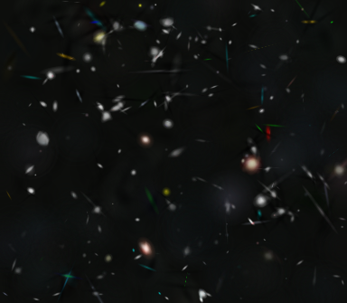
SVG · LPIPS 0.4402 · SSIM 0.5639 · 959 splats · 532 KB · live vector
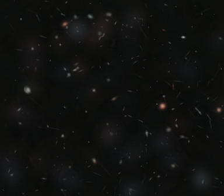
PowerPoint · LPIPS 0.4167 · SSIM 0.5204 · 1,177 shapes · 104 KB · real capture · deck
page · text-like · 384×191
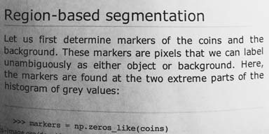
Source · original bitmap · 76 KB
Scripted runtime · LPIPS 0.4918 · SSIM 0.7039 · 1,009 splats · 163 KB · live JS/WebGL
Scriptless CSS · LPIPS 0.4586 · SSIM 0.6530 · 973 splats · 506 KB · live DOM
SVG · LPIPS 0.4619 · SSIM 0.6523 · 973 splats · 554 KB · live vector
PowerPoint · LPIPS 0.6047 · SSIM 0.3974 · 994 shapes · 81 KB · real capture · deck
grass · texture · 384×384
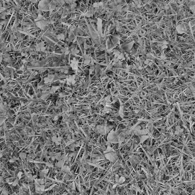
Source · original bitmap · 210 KB
Scripted runtime · LPIPS 0.5287 · SSIM 0.4624 · 1,346 splats · 220 KB · live JS/WebGL
Scriptless CSS · LPIPS 0.5222 · SSIM 0.4258 · 1,290 splats · 672 KB · live DOM
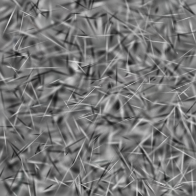
SVG · LPIPS 0.5114 · SSIM 0.4267 · 1,290 splats · 742 KB · live vector
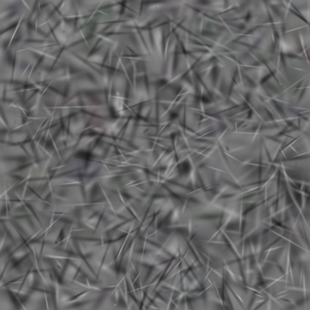
PowerPoint · LPIPS 0.5583 · SSIM 0.3216 · 1,341 shapes · 113 KB · real capture · deck
gravel · texture · 384×384
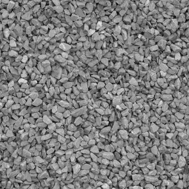
Source · original bitmap · 184 KB
Scripted runtime · LPIPS 0.5311 · SSIM 0.5176 · 1,260 splats · 201 KB · live JS/WebGL
Scriptless CSS · LPIPS 0.5470 · SSIM 0.4131 · 1,475 splats · 769 KB · live DOM
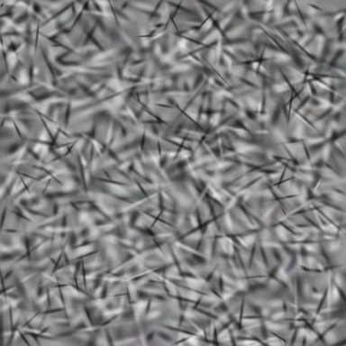
SVG · LPIPS 0.5403 · SSIM 0.3938 · 1,475 splats · 841 KB · live vector
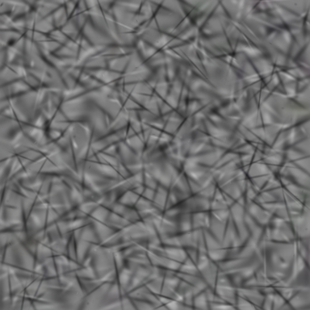
PowerPoint · LPIPS 0.5412 · SSIM 0.3991 · 1,273 shapes · 102 KB · real capture · deck
← SplatThis project page ·
technical report